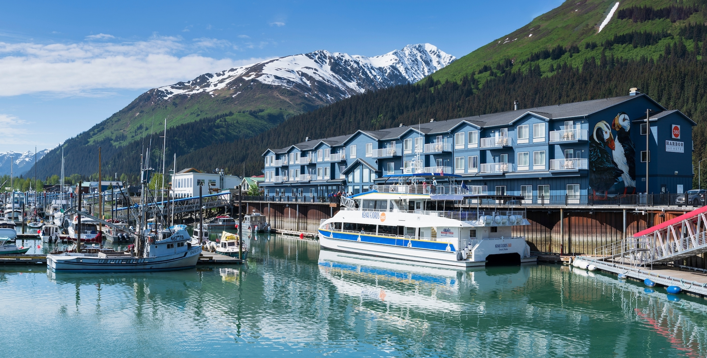

Seward
Seward was founded in 1903 and named after William H Seward, the man who negotiated the purchase of Alaska from Russia. Originally a supply base and ocean terminus for the railway to the Yukon valley. The great earthquake of 1964 produced fires in seward which were put out when the town was hit by a tsunami. Those events destroyed 90 percent of Seward. Seward is know as the
Places to Eat
Seward has some incredible seafood which comes from the harbor. Some of the local resturants in Seward that sells this fresh food are as follows The cookery, The Highliner Resturant, and The Smoke Shack
Places to Stay
While you are here in Seward we have many comfortable lodges for you and loved ones to stay in. Here are a few reccomended lodgings, Harbor 360 Hotel, Hotel Seward, Seward Gateway Hotel, and the Breeze Inn.
Entertainment
Seward is home to the Kenai Fjords so while you are here you can take a boat tour and see some of Alaska most breathtaking views as well as the amazing wildlife of Alaska. Seeing these amazing creatures in their natural habitat is awe inspiring, however if you want to have a upclose view of the animals at the Alaska sealife center.